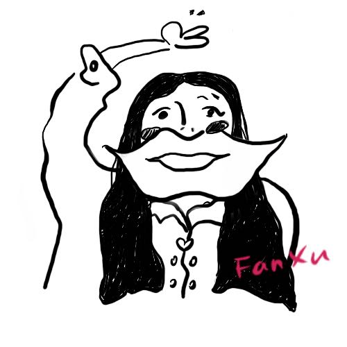

Hi! I am Fan Xu
I am a Product and UX Designer focusing on user experience and how technologyü§ñ changes life! I am passionate about building delightful, human-centered experiences that make a lasting impact on users' lives. I am always motivated ‚ú® to make it easier for people to use products of all kinds. Being a UX designer let me have the chance to explore what the future could be. I am very willing to talk about my experiences with you. Feel free to contact me!
I am now a 1st-year graduate student at University of Michigan, School of Information. "UMSI’s Master of Science in Information (MSI) is a professional, interdisciplinary degree that prepares students for a range of information-related careers." I really enjoy my life in Ann Arbor！Here I met many wonderful friends from different majors. I believe I will become more professional after gratuation. BTW, the scenery in and around Ann Arbor is really good!
I was working as the UX Designer at Segway-Ninebot from 2018 to 2020. This experience gave me insight and helped me to explore the relationship between people and technology. I seized every opportunity to meet users and tried to make a difference to Loomo's user experience. (Loomo is a personal companion robot.) I also got the opportunity to explore the commercial and industrial setting. When Loomo project was finished, I joined the delivery robot team and I was responsible for exploring how to use robots to save manpower in office buildings.